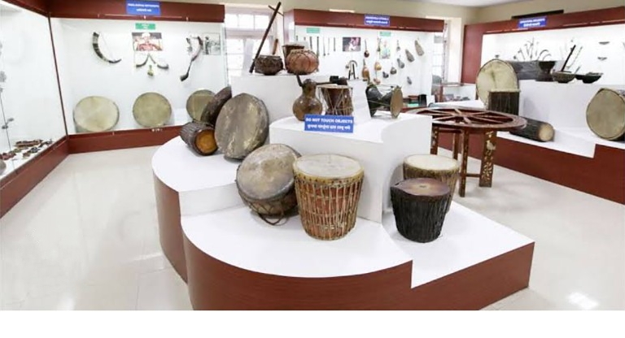

BACKPune Tribal Museum

Pune Tribal Museum is located in the city of Pune, Maharashtra, India. The Museum was establi extension of Tribal
Research and Training Institute, Pune, started display in year 1965 and e Maharashtrian tribes. This tribal
museum was found as a place 'committed to preserve, the art: "tribals". The administration of the museum is
currently with Tribal Research and Training In.